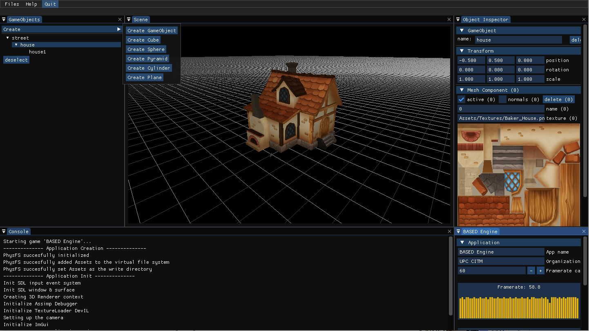
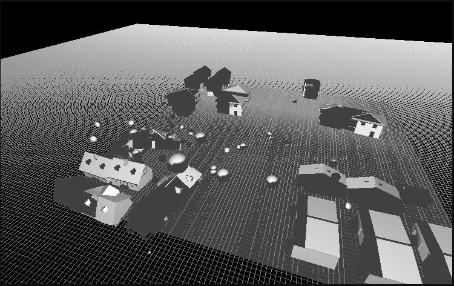
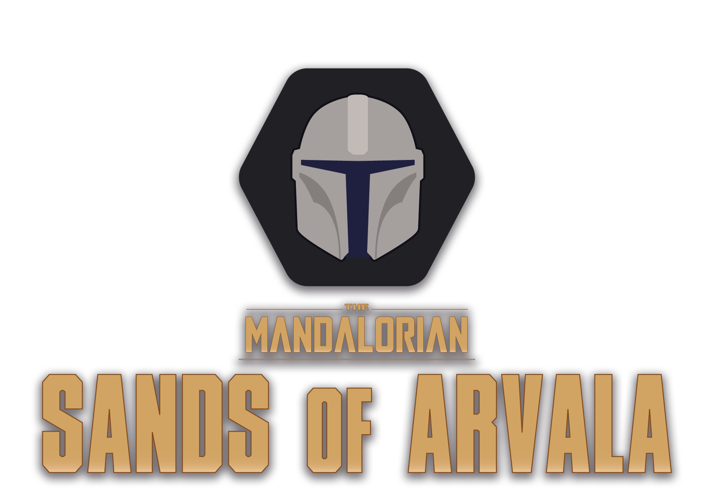
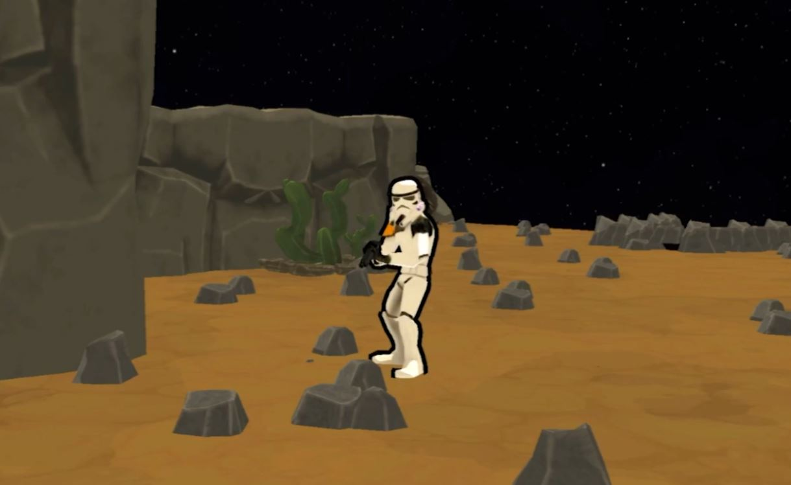
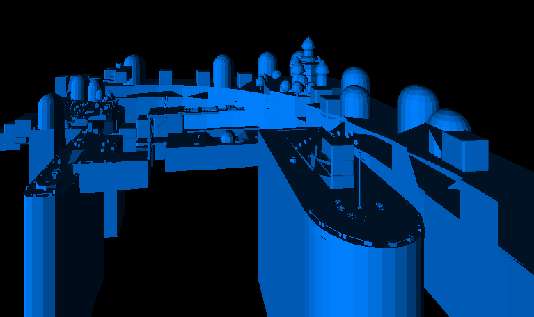
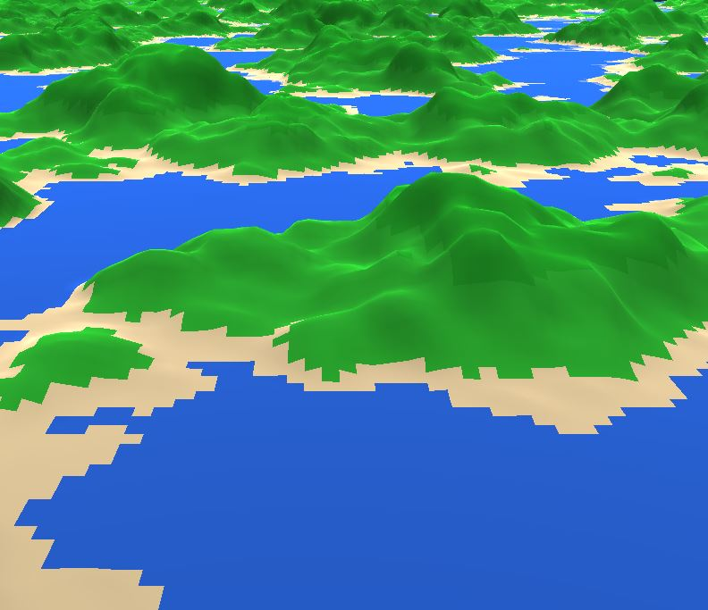

Project Highlights
In this section I present some of my projects that I believe showcase my abilities as a developer and programmer. I'm not gonna be showcasing all of my projects in this webpage, only the ones that I find most meaningful. If you want to check all my projects or what I'm currently working on check out my GitHub.
Based Engine
Based Engine is a video game 3D engine (Unity like) developed with the help of David Rami using OpenGL for the 3D Graphics and various libraries, like ImGui for the user interface and many more for managing files listed in the engine readme. We managed to develop our own custom file format for performance increase, a game Object system where components can be attached to and much more functionality. In this engine we especially focus on developing a physics system that could be easily implemented in a game, with the use of rigidbodies and different shaped colliders using the NVIDIA library PhysX. We managed to implement the physics to other projects later on like The Mandalorian: Sands of Arvala.
The Mandalorian: Sands of Arvala
The Mandalorian: Sands of Arvala is a shooter roguelike based on the famous tv series The Mandalorian. This game was developed by the whole class contributing to the project. We distributed the work in different departments: Programmers,Designers and Artists. To learn more about the project and the game check out our website.
This game was developed using a custom engine created by the programmers. My personal contribution to this project was mainly developing various systems like the physics system, sprite sheets, UI Animations and more gameplay elements. During the development i had to work with a team of 8 programmers using Git and developing the custom engine that we ended up using for the game.3D Graphics engine
In this project, I attempt to create the base of a 3D graphics engine from scratch using the SDL libraries for the visuals (2D) and projection matrix to transpose the 3D space into a 2D screen representation. I also implemented functions to read information from .obj files into triangle and vertex information for my engine to use. Performance is limited due to the drawing of the triangles, not the algorithm behind the matrix calculations. Using a lower resolution (in game) helps with performance issues.
Procedural map generation
In this project I created a procedurally generated map using Perlin noise as the base for randomizing my maps. The code for generating the noise takes different parameters to customize the details of the noise map generated. Octaves, number of layers of noise that are added on top of the main Perlin noise layer. Lacunarity controls the increase in frequency of these octaves. And finally persistence, that controls the decrease in amplitude of these same octaves. By changing these values inside the Unity editor you can see how it affects the map generation. Developed using the Unity engine with C# Scripts created from scratch.